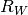
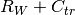
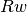

Building¶
This module contains functions related to building acoustics.
- acoustics.building.mass_law(freq, vol_density, thickness, theta=0, c=343, rho0=1.225)[source]¶
Calculate transmission loss according to mass law.
Parameters: - freq (float or NumPy array) – Frequency of interest in Hz.
- vol_density (float) – Volumetric density of material in [kg/m^3].
- thickness (float) – Thickness of wall.
- theta (float) – Angle of incidence in degrees. Default value is 0 (normal incidence).
- c (float) – Speed of sound in [m/s].
- rho0 (float) – Density of air in kg/m^3.
- acoustics.building.rw(tl)[source]¶
Calculate  from a NumPy array tl with third octave data between 100 Hz and 3.15 kHz.
Parameters: tl – Transmission Loss
- acoustics.building.rw_c(tl)[source]¶
Calculate
 from a NumPy array tl with third octave data
between 100 Hz and 3.15 kHz.
from a NumPy array tl with third octave data
between 100 Hz and 3.15 kHz.Parameters: tl – Transmission Loss
- acoustics.building.rw_ctr(tl)[source]¶
Calculate  from a NumPy array tl with third octave data between 100 Hz and 3.15 kHz.
Parameters: tl – Transmission Loss
- acoustics.building.rw_curve(tl)[source]¶
Calculate the curve of  from a NumPy array tl with third octave data between 100 Hz and 3.15 kHz.
Parameters: tl – Transmission Loss